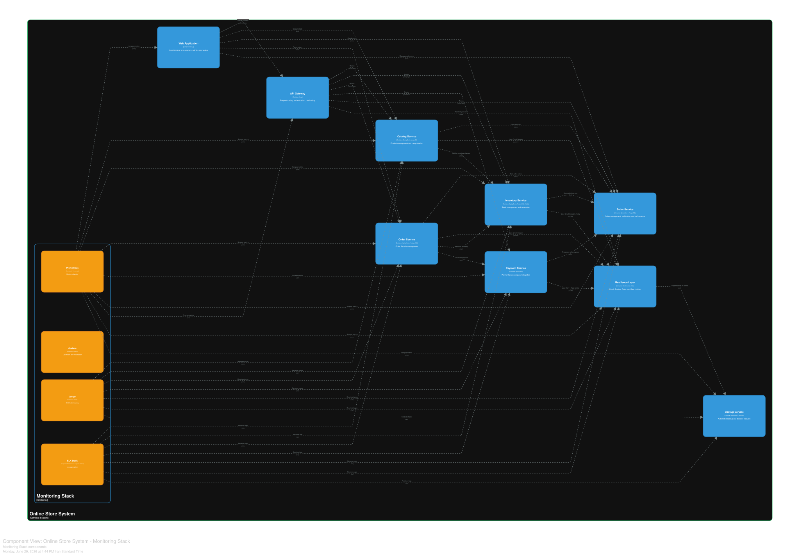
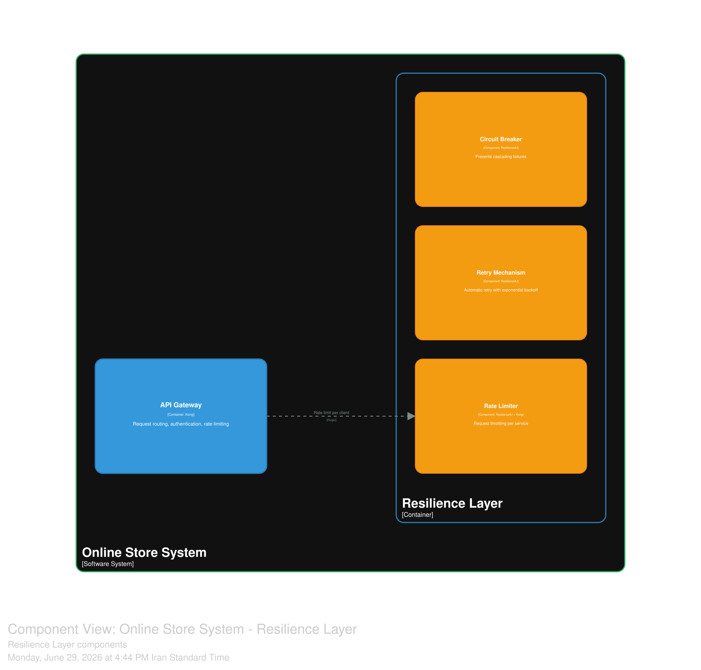

مفاهیم عرضی¶
نمای کلی¶
مفاهیم عرضی، مجموعهای از اصول، رویهها و مکانیزمهایی هستند که در تمام لایههای سامانه جاری میباشند و جنبههای مشترک معماری را پوشش میدهند.
این مفاهیم شامل امنیت، پایش، مقاومسازی، مدیریت خطا، ثبت وقایع و مدیریت پیکربندی میشوند. در این بخش، هر یک از این مفاهیم بهصورت مستقل و با جزئیات کامل تشریح میگردند تا درک جامعی از رویکردهای عرضی سامانه ارائه شود.
امنیت¶
امنیت سامانه بر اساس اصول دفاع در عمق و کمترین دسترسی طراحی شده است و شامل لایههای مختلفی از محافظت میباشد.
احراز هویت و مدیریت دسترسی:
مدیریت هویت و دسترسی با استفاده از کیکلاک پیادهسازی شده است. این رویکرد از پروتکلهای استاندارد OAuth2 و OpenID Connect برای احراز هویت استفاده میکند و کنترل دسترسی مبتنی بر نقش را برای مدیریت سطوح دسترسی کاربران فراهم میسازد.
رمزنگاری:
تمام ارتباطات در سامانه با استفاده از پروتکل TLS 1.3 رمزنگاری میشوند. دادههای حساس کاربران در حالت ذخیرهسازی با استفاده از الگوریتمهای رمزنگاری پیشرفته محافظت میگردند و کلیدهای رمزنگاری در سامانه مدیریت اسرار ذخیره میشوند.
امنیت ارتباطات:
تمامی تعاملات بین سرویسها از طریق پروتکل HTTPS انجام میشود. دروازه رابط برنامهنویسی به عنوان لایه اولیه امنیت، درخواستهای مخرب را شناسایی و مسدود میکند و محدودیتهای نرخ را برای جلوگیری از حملات انکار سرویس اعمال مینماید.
مدیریت اسرار:
اطلاعات حساس مانند کلیدهای API، رمزهای عبور و گواهیها در سامانه مدیریت اسرار ذخیره میشوند. این سامانه امکان دسترسی امن به اسرار را فراهم میکند و از در معرض قرار گرفتن آنها در کد یا پیکربندی جلوگیری مینماید.
ممیزی و ثبت رویدادهای امنیتی:
تمامی رویدادهای مرتبط با احراز هویت، تغییرات دسترسی و فعالیتهای حساس در سامانه ثبت میشوند. این لاگها به صورت متمرکز جمعآوری شده و برای تحلیل رویدادهای امنیتی و پاسخ به حوادث مورد استفاده قرار میگیرند.
پایش و مشاهدهپذیری¶
پایش و مشاهدهپذیری سامانه با استفاده از مجموعهای از ابزارهای متنباز پیادهسازی شده است تا دید کاملی از عملکرد، سلامت و رفتار سامانه فراهم شود.

نمودار ۵: کامپوننتهای پشته پایش
جمعآوری معیارها:
پرومتئوس به عنوان ابزار اصلی جمعآوری معیارها استفاده میشود. این ابزار به طور دورهای معیارهای تمام سرویسها را دریافت میکند و آنها را در پایگاه داده زمانی خود ذخیره مینماید. معیارهای کلیدی شامل استفاده از CPU، حافظه، تعداد درخواستها، زمان پاسخگویی و نرخ خطا میباشد.
نمایشگر و هشدار:
گرافانا برای نمایش معیارها در قالب داشبوردهای تعاملی استفاده میشود. این ابزار امکان ایجاد نمودارهای مختلف، تحلیل روندها و شناسایی ناهنجاریها را فراهم میکند. همچنین هشدارها بر اساس آستانههای تعریفشده از طریق پاجر داتی و اسلک به تیم عملیات ارسال میشوند.
ردیابی توزیعشده:
یاگر برای ردیابی توزیعشده درخواستها در سامانه استفاده میشود. این ابزار امکان مشاهده مسیر کامل یک درخواست را در سرویسهای مختلف فراهم میکند و به شناسایی گلوگاههای عملکردی کمک مینماید.
تجمیع و تحلیل لاگ:
پشته ELK شامل Elasticsearch، Logstash و Kibana برای تجمیع و تحلیل لاگها استفاده میشود. تمام لاگهای تولیدشده توسط سرویسها به صورت متمرکز جمعآوری، نمایهسازی و قابل جستجو میشوند. این قابلیت به تیمهای عملیاتی کمک میکند تا خطاها را ریشهیابی کنند و الگوهای مشکوک را شناسایی نمایند.
مقاومسازی¶
مقاومسازی سامانه با استفاده از الگوهای مختلفی پیادهسازی شده است تا در صورت بروز خطا در بخشهای مختلف، سامانه همچنان به ارائه خدمت ادامه دهد.

نمودار ۶: کامپوننتهای لایه مقاومسازی
قطعکننده مدار:
الگوی قطعکننده مدار از ارسال درخواست به سرویسهای معیوب جلوگیری میکند. زمانی که یک سرویس با خطای مکرر مواجه شود، قطعکننده مدار فعال شده و درخواستها به سرعت با خطا پاسخ داده میشوند. این الگو از ایجاد خرابیهای آبشاری جلوگیری میکند و به سرویس معیوب فرصت بازیابی میدهد.
تکرار با پشتیبان نمایی:
الگوی تکرار با پشتیبان نمایی، در صورت بروز خطا، درخواست را با زمانهای انتظار افزایشی مجدداً ارسال میکند. این رویکرد برای خطاهای گذرا مانند قطعی موقت شبکه یا زمانهای انتظار طولانی بسیار مؤثر است.
محدودکننده نرخ:
الگوی محدودکننده نرخ، تعداد درخواستهای ارسالی به هر سرویس را در بازه زمانی مشخص محدود میکند. این رویکرد از بارگذاری بیش از حد سرویسها جلوگیری میکند و تضمین میکند که تمام کاربران بتوانند بهصورت عادلانه از سامانه استفاده کنند.
جداسازی منابع:
الگوی جداسازی منابع، منابع سرویسها را از یکدیگر جدا میکند تا خرابی یک سرویس بر سایر سرویسها تأثیر نگذارد. این رویکرد با استفاده از پروفایلهای منابع جداگانه و ایزولهسازی در سطح کانتینر پیادهسازی شده است.
مدیریت خطا¶
مدیریت خطا در سامانه بر اساس اصول شفافیت، بازیابی خودکار و تجربه کاربری روان طراحی شده است.
طبقهبندی خطاها:
خطاها در سامانه به چهار دسته تقسیم میشوند:
-
خطاهای موقت: خطاهایی که به دلیل شرایط گذرا مانند قطعی شبکه رخ میدهند و با تکرار قابل رفع هستند.
-
خطاهای اعتبارسنجی: خطاهایی که به دلیل ورودی نامعتبر از سوی کاربر ایجاد میشوند.
-
خطاهای منطق کسبوکار: خطاهایی که به دلیل نقض قوانین کسبوکار رخ میدهند.
-
خطاهای سیستمی: خطاهایی که به دلیل خرابی سرویسها یا زیرساخت ایجاد میشوند.
مدیریت خطا در سرویسها:
هر سرویس دارای مکانیزم مدیریت خطای متمرکز است که خطاها را شناسایی، ثبت و بهصورت مناسب پاسخ میدهد. خطاهای بازیابیپذیر بهصورت خودکار با استفاده از الگوهای تکرار مدیریت میشوند. خطاهای غیرقابل بازیابی به کاربران با پیامهای مناسب نمایش داده میشوند و برای تحلیل بعدی ثبت میگردند.
مدیریت خطا در پایگاه داده:
تراکنشهای پایگاه داده با استفاده از مکانیزمهای اتمیک انجام میشوند تا در صورت بروز خطا، دادهها در حالت ناسازگار قرار نگیرند. در صورت بروز خطا در تراکنشهای توزیعشده، از الگوی SAGA برای بازگشت به حالت قبل استفاده میشود.
ثبت وقایع¶
ثبت وقایع در سامانه بهصورت ساختاریافته و متمرکز انجام میشود تا امکان تحلیل، ریشهیابی و پایش مؤثر فراهم شود.
ساختار لاگها:
همه لاگها در سامانه بهصورت ساختاریافته و با فرمت JSON تولید میشوند. هر لاگ شامل اطلاعات زیر است:
-
زمان وقوع: زمان دقیق ثبت رویداد
-
سطح اهمیت: شامل DEBUG، INFO، WARN، ERROR و FATAL
-
سرویس مبدأ: نام سرویسی که رویداد را ثبت کرده است
-
شناسه درخواست: شناسه یکتای درخواست برای ردیابی در سرویسهای مختلف
-
پیام: توضیح مختصر رویداد
-
دادههای اضافی: اطلاعات زمینهای مرتبط با رویداد
جمعآوری و ذخیرهسازی:
لاگها توسط پشته ELK بهصورت متمرکز جمعآوری میشوند. Logstash لاگها را دریافت، پردازش و به Elasticsearch ارسال میکند. Elasticsearch لاگها را نمایهسازی کرده و قابلیت جستجوی سریع را فراهم میسازد. Kibana رابط کاربری برای جستجو و تحلیل لاگها ارائه میدهد.
دسترسی و نگهداری:
دسترسی به لاگها بر اساس نقشهای کاربری کنترل میشود و تنها افراد مجاز قادر به مشاهده لاگهای حساس هستند. لاگها با توجه به قوانین نگهداری داده، برای مدت زمان مشخصی ذخیره شده و سپس بایگانی یا حذف میشوند.
مدیریت پیکربندی¶
مدیریت پیکربندی سامانه بهصورت متمرکز و با استفاده از رویکرد زیرساخت بهعنوان کد انجام میشود.
جداسازی پیکربندی از کد:
تمام پیکربندیهای سامانه از کد برنامه جدا شدهاند و در فایلهای پیکربندی خارجی ذخیره میشوند. این رویکرد امکان تغییر پیکربندی بدون نیاز به بازنویسی کد را فراهم میکند.
پیکربندی محیطهای مختلف:
پیکربندیها برای محیطهای مختلف توسعه، آزمایش و تولید بهصورت جداگانه تعریف میشوند. هر محیط دارای پیکربندی اختصاصی خود است که شامل اطلاعات اتصال به پایگاه داده، آدرس سرویسهای خارجی و تنظیمات خاص آن محیط میباشد.
مدیریت اسرار پیکربندی:
اطلاعات حساس پیکربندی مانند رمزهای عبور و کلیدهای API در سامانه مدیریت اسرار ذخیره میشوند و بهصورت امن در اختیار سرویسها قرار میگیرند. این اطلاعات هرگز در فایلهای پیکربندی ذخیره نمیشوند.
پانویسها¶
¹ کیکلاک (Keycloak) سامانه متنباز برای مدیریت هویت و دسترسی که از پروتکلهای استاندارد OAuth2 و OpenID Connect پشتیبانی میکند و قابلیتهایی مانند Single Sign-On و کنترل دسترسی مبتنی بر نقش را ارائه میدهد.
² OAuth2 چارچوبی استاندارد برای اعطای دسترسی به منابع که به برنامههای شخص ثالث اجازه میدهد بدون نیاز به دانستن رمز عبور کاربر، به دادههای او دسترسی داشته باشند.
³ OpenID Connect لایه احراز هویت بر روی پروتکل OAuth2 که امکان احراز هویت کاربران را با استفاده از توکنهای امن فراهم میکند.
⁴ پرومتئوس (Prometheus) سامانه متنباز برای جمعآوری و ذخیرهسازی معیارها که با استفاده از مدل دادههای زمانی و زبان پرسوجوی قدرتمند خود، امکان پایش و هشدار را فراهم میکند.
⁵ گرافانا (Grafana) ابزار متنباز برای نمایش و تحلیل دادههای زمانی که امکان ایجاد داشبوردهای تعاملی، نمودارها و هشدارها را فراهم میکند.
⁶ یاگر (Jaeger) سامانه متنباز برای ردیابی توزیعشده که به مشاهده مسیر درخواستها در سرویسهای مختلف و تحلیل عملکرد آنها کمک میکند.
⁷ پشته ELK مجموعهای از سه ابزار Elasticsearch، Logstash و Kibana که برای تجمیع، نمایهسازی و نمایش لاگها استفاده میشوند.
⁸ الگوی SAGA الگویی برای مدیریت تراکنشهای توزیعشده که با استفاده از رویدادها و عملیات جبرانی، یکپارچگی دادهها را در سامانههای توزیعشده تضمین میکند.